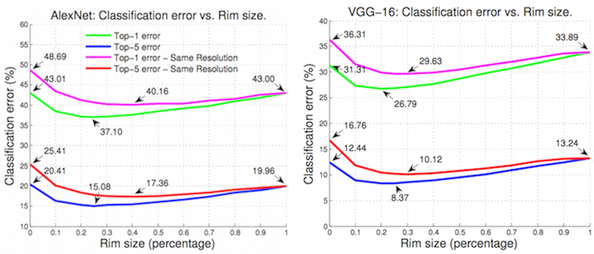
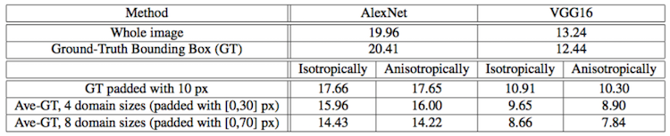
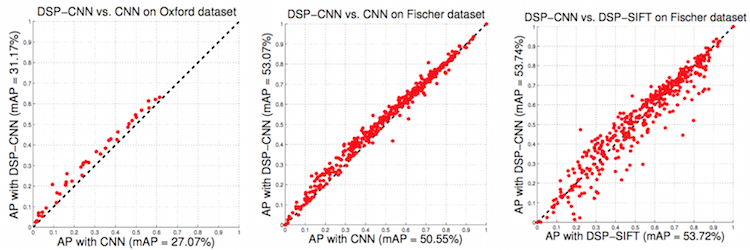
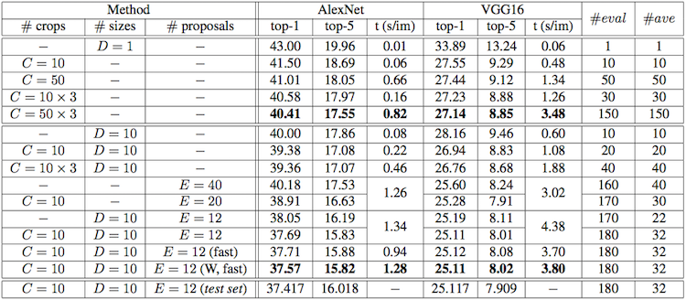
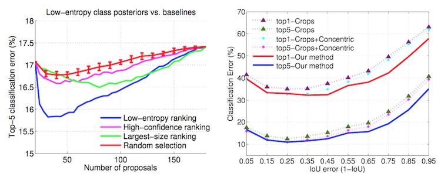

An Empirical Evaluation of Current Convolutional Architectures’ Ability to Manage
Nuisance Location and Scale Variability
Abstract
We conduct an empirical study to test the ability of convolutional neural networks (CNNs) to reduce
the effects of nuisance transformations of the input data, such as location, scale and aspect ratio.
We isolate factors by adopting a common convolutional architecture either deployed globally on the
image to compute class posterior distributions, or restricted locally to compute class conditional
distributions given location, scale and aspect ratios of bounding boxes determined by proposal heuristics.
In theory, averaging the latter should yield inferior performance compared to proper marginalization.
Yet empirical evidence suggests the converse, leading us to conclude that – at the current level of complexity
of convolutional architectures and scale of the data sets used to train them – CNNs are not very effective at
marginalizing nuisance variability. We also quantify the effects of context on the overall classification task
and its impact on the performance of CNNs, and propose improved sampling techniques for heuristic proposal schemes
that improve end-to-end performance to state-of-the-art levels. We test our hypothesis on a classification task
using the ImageNet Challenge benchmark and on a wide-baseline matching task using the Oxford and Fischer’s datasets.
Code
Download the source code as [zip] (45 KB)
Paper
Full paper: [pdf] (475 KB)
Bibtex citation
@InProceedings{karianakisDS_2016_CVPR,
author = {Karianakis, Nikolaos and Dong, Jingming and Soatto, Stefano},
title = {An Empirical Evaluation of Current Convolutional Architectures’ Ability to Manage Nuisance Location and Scale Variability},
booktitle = {The IEEE Conference on Computer Vision and Pattern Recognition},
month = {June},
year = {2016}
}
Highlights
Convolutional neural networks (CNNs) are the de-facto paragon for detecting the presence of objects in a scene,
as portrayed by an image. CNNs are described as being “approximately invariant” to nuisance transformations such
as planar translation, both by virtue of their architecture (the same operation is repeated at every location akin
to a “sliding window” and followed by local spatial pooling) and by virtue of their approximation properties that, given
sufficient parameters and transformed training data, could in principle yield discriminants that are insensitive to
nuisance transformations of the data represented in the training set.
The fact that CNNs have been very successful in classifying images as containing a given object regardless of
its position, scale, and aspect ratio [3, 4] suggests that the network can effectively manage such nuisance variability.
In this paper we test this hypothesis, aiming to answer to the question: How effective are current CNNs to reduce
the effects of nuisance transformations of the input data, such as location and scaling?
First, we test the hypothesis that eliminating the nuisances of location and scaling by providing the ground-truth
bounding box for the object of interest will improve the classification accuracy. During our investigation we
observe the importance of another nuisance factor, which is the amount of background that is padded around the
object of interest.
In the following figure we show the top-1 and top-5 classification error in ImageNet 2014 as a function of the rim size
for AlexNet [3] (left) and VGG16 [4] (right) architecture.
A 0 rim size corresponds to the ground-truth bounding box, while 1 refers to the whole image.
Performance decreases for AlexNet (which has top-5 error of 19.96%) to 20.41% when constrained to the ground-truth bounding boxes.
This may seem surprising at first, but note that the restriction to bounding boxes does not just condition on the location-scale group,
but also on visibility, as the image outside the bounding box is ignored. Thus, the slight decrease in performance measures the loss
from discarding context by ignoring the image beyond the bounding box. On the other hand, a relatively small rim
around the ground truth provides the best trade-off between context and clutter. It is interesting how quickly beyond
a small rim the performance degrades.

The second contribution concerns the proper sampling of the nuisance group. If we interpret the CNN restricted to
a bounding box as a function that maps samples of the location-scale group to class-conditional distributions,
where the proposal mechanism down-samples the group, then classical sampling theory teaches that we should
retain not the value of the function at the samples, but its local average, a process known as anti-aliasing.
In the next table we show that simple uniform averaging of 4 and 8 samples of the isotropic scale group
(leaving location and aspect ratio constant) reduces the error to 15.96% and 14.43% respectively. Someone might expect
that averaging conditional densities would produce less discriminative classifiers, but it is in line with recent developments
concerning “domain-size pooling” [2]. Intuitively, averaging trades off discriminative power
with insensitivity to nuisance variability.

To test the effect of such anti-aliasing on a CNN absent the knowledge of ground truth object location, we test
a domain-size pooled CNN in wide-baseline correspondence of regions selected by a generic low-level detector.
Our third contribution is to show that this procedure improves the baseline CNN by 5–15% mean AP on standard
benchmark datasets (comparisons with standard CNN and DSP-SIFT [2] in following plots).

Our fourth contribution goes towards answering the question set forth in the preamble: We consider two popular
baselines (AlexNet [3] and VGG16 [4]) that perform at the state-of-the-art
in the ImageNet Classification challenge and introduce
novel sampling and pruning methods, as well as an adaptively weighted marginalization based on the inverse Rényi
entropy. Now, if averaging the conditional class posteriors obtained with various sampling schemes should improve overall
performance, that would imply that the implicit “marginalization” performed by the CNN is inferior to that obtained by
sampling the group, and averaging the resulting class conditionals. This is indeed our observation, e.g., for VGG16, as
we achieve an overall performance of 8.02%, compared to 13.24% when using the whole image (see table below). Our conclusion is
that at the current level of complexity of convolutional architectures and scale of the data sets used to train them –
CNNs are not very effective at marginalizing nuisance variability.

Our fifth contribution is to actually provide a method that performs at the state of the art in the ImageNet
Classification challenge when using a single model. In the table above we provide various results and time complexity.
We achieve a top-5 classification error of 15.82% and 8.02% for AlexNet and VGG16, compared to 17.55% and 8.85% error
when they are tested with 150 regularly sampled crops as customary in the literature [4],
which corresponds to 9.9% and 9.4% relative error reduction, respectively. To set this in perspective,
Krizhevsky et al. [3] report 16.4% top-5 error
when they combine 5 models. We improve this performance using one single model. Data augmentation techniques such as
scale jittering and an ensemble of several models could be deployed along with our method.
In the figure below (left) we show the top-5 error as a function of the number of proposals we average to produce the final posterior.
Samples are generated with our algorithm and classified with AlexNet. The blue curve corresponds to selecting
samples with the lowest-entropy posteriors. We compare our method with simple strategies such as random selection, ranking by largest-size
or highest confidence of proposals. Empirically, the discriminative power of the classifier increases when the samples are selected
with the least entropy criterion.

Regular and concentric crops assume that objects occupy most of the image or appear near the center. This is a known bias
in the ImageNet dataset. To analyze the effect of adaptive sampling, we calculate the intersection over union error between the objects
and the regular and concentric crops, and show in the figure above (right) the performance of various methods as a function
of the IoU error. The improvement of using adaptive sampling (via proposals) over only regular and concentric crops increases
as IoU error grows.
References
1. An Empirical Evaluation of Current Convolutional Architectures' Ability to Manage Nuisance Location
and Scale Variability.
N. Karianakis, J. Dong and S. Soatto.
In IEEE Conference on Computer Vision and Pattern Recognition (CVPR), June 2016. [paper,
poster]
2. Domain-Size Pooling in Local Descriptors: DSP-SIFT.
J. Dong and S. Soatto.
In IEEE Conference on Computer Vision and Pattern Recognition (CVPR), June 2015.
3. ImageNet classification with deep convolutional neural networks.
A. Krizhevsky, I. Sutskever, and G. E. Hinton.
In Advances in Neural Information Processing Systems, December 2012.
4. Very deep convolutional networks for large-scale image recognition.
K. Simonyan and A. Zisserman.
In International Conference on Learning Representations, May 2015.
5. Descriptor matching with convolutional neural networks: a comparison to SIFT.
P. Fischer, A. Dosovitskiy, and T. Brox.
In arXiv preprint arXiv:1405.5769, 2014.
author = {Karianakis, Nikolaos and Dong, Jingming and Soatto, Stefano},
title = {An Empirical Evaluation of Current Convolutional Architectures’ Ability to Manage Nuisance Location and Scale Variability},
booktitle = {The IEEE Conference on Computer Vision and Pattern Recognition},
month = {June},
year = {2016}
}
1. An Empirical Evaluation of Current Convolutional Architectures' Ability to Manage Nuisance Location and Scale Variability.
N. Karianakis, J. Dong and S. Soatto.In IEEE Conference on Computer Vision and Pattern Recognition (CVPR), June 2016. [paper, poster]
2. Domain-Size Pooling in Local Descriptors: DSP-SIFT.
J. Dong and S. Soatto.In IEEE Conference on Computer Vision and Pattern Recognition (CVPR), June 2015.
3. ImageNet classification with deep convolutional neural networks.
A. Krizhevsky, I. Sutskever, and G. E. Hinton.In Advances in Neural Information Processing Systems, December 2012.
4. Very deep convolutional networks for large-scale image recognition.
K. Simonyan and A. Zisserman.In International Conference on Learning Representations, May 2015.
5. Descriptor matching with convolutional neural networks: a comparison to SIFT.
P. Fischer, A. Dosovitskiy, and T. Brox.In arXiv preprint arXiv:1405.5769, 2014.